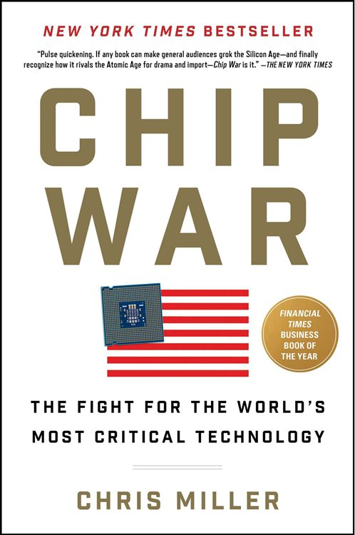
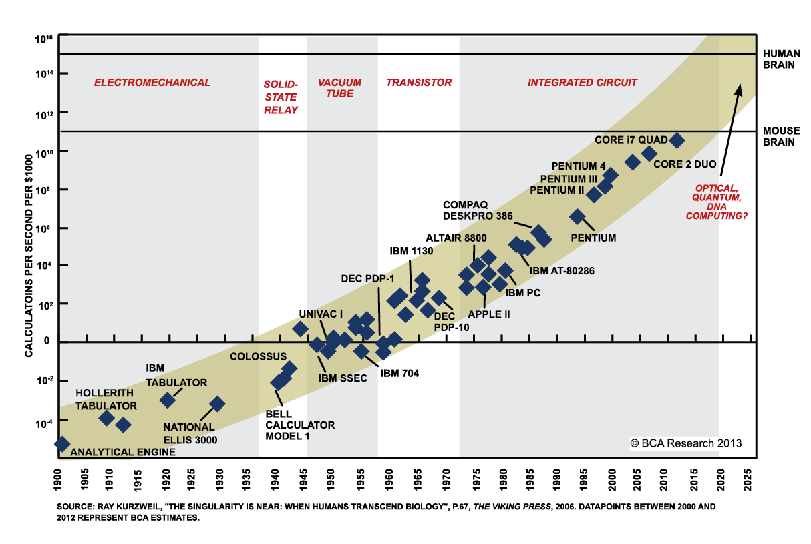
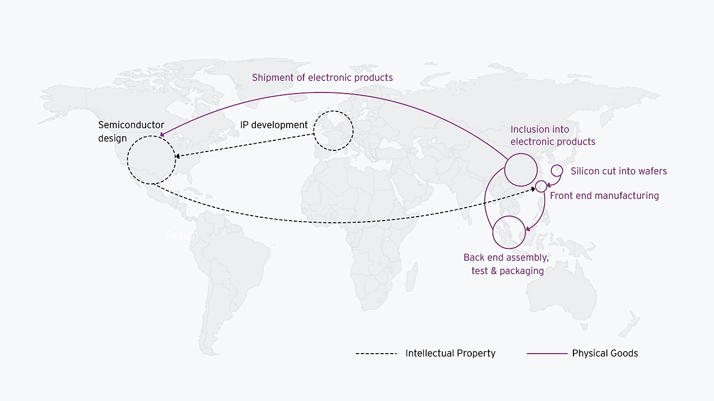
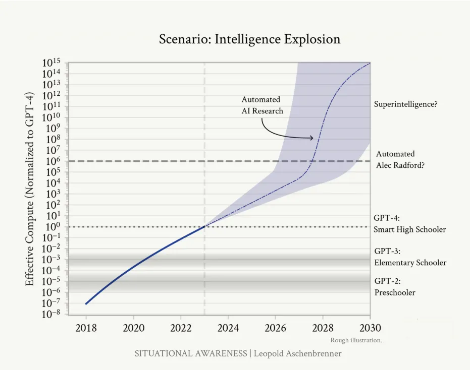

Book Review: Chip Wars by Chris Miller

When I began reading this book I knew very little about computer chips. I became interested in the subject mostly because of the press coverage around AI and NVIDIA which recently became one of the biggest companies in the world out of seemingly nowhere. I had little technical knowledge about what chips do, little understanding of their global economic performance, and no awareness of their importance in global security and military applications. I know a little more after reading Chip Wars by Chris Miller, and I hope to share this knowledge I’ve gained in this post as well as my own thoughts.
Not a Potato Chip

What’s essential to understand is that historically, the improvement of computer chips more or less has coincided with the growth of technology we’ve seen in the past half-decade or so. In 1965 founder of Intel Gordon Moore predicted that the number of transistors per semiconductor chip would roughly double each year, and that this continual progress in hardware would give rise to unimaginable technologies such as personal computers and handheld devices. Moore’s law as it has since been coined has indeed held, and has showed no signs of slowing despite the repetitious bending of physics and monumental global supply chain required to manufacture these chips at scale.
If you’re like me before reading this book you may be thinking “Ok, cool. But what the *#%$ is a transistor, why are they getting smaller, and what does it matter?” A transistor is a microscopic electronic switch that has two settings: one and zero. If you stuff enough of these minature switches on a silicon wafer, they connect together and form messages in binary. This is the crux of the interaction between hardware and software, and thus it follows that the more complex messages these computer chips can send, the more advanced the task that can be executed on an electronic device.
This is a vastly oversimplified explanation, but one that makes sense to me. There are many different types of chips optimized for different tasks. Logic chips, memory chips, CPUs, GPUs, TPUs, and a million others that perform different functions. The hot one right now, of course is GPUs, which were initially intended for 3d graphics processing in gaming devices, but due to their state-of-the art parallel processing capabilities have been revolutionary in the field of AI. This is because AI models need to process vast amounts of data and parallel processing allows these tasks to be divided across multiple processors, significantly speeding up computations and making it feasible to work with large datasets in a reasonable time frame.
The World’s Most Complex Supply Chain

Not only are semiconductor chips the most complex technology humans have ever made, they also require the most complex supply chain in history to mass produce. Before a chip makes it into your iPhone it passes through several chokepoints that each would topple the global economy at the slightest disruption. Brutally oversimplified these chokepoints are:
- Design: Firms such as Apple, NVIDIA, Texas Instruments, Intel, Qualcomm, and Arm focus on creating the architecture and blueprints for semiconductor chips. These designs are incredibly intricate, often involving billions of transistors. The design phase is crucial, as it determines the performance, efficiency, and capabilities of the chip. Design firms typically use sophisticated software tools (EDA tools) from companies like Synopsys, Cadence, and Mentor Graphics to develop these complex circuits.
- Photolithography: Once the design is complete, it needs to be translated onto silicon wafers. This is where photolithography comes in. Photolithography is a process that uses chemicals and light to print intricate chip designs onto the silicon. As there are more transistors in one of today’s most advanced chips than there is in the human body, this process requires highly specialized, and extraordinarily expensive equipment. Due to the intense level of expertise required to manufacture these machines, one company in Netherlands, ASML, has a near 100% market share in the most advanced extreme ultraviolet (EUV) lithography machines. Just one of these bad boys will run you over $100 million dollars
- Manufacturing: The actual production of chips is primarily done by foundries, with Taiwan Semiconductor Manufacturing Company (TSMC) being the most prominent player touting a 92% market share in development of the worlds most advanced chips and Samsung being a far second. It used to be that companies like Intel would manufacture their own chips, but as photolithography and other equipment became increasingly complicated and expensive companies that tried to keep pace in both of these areas were outcompeted. Companies liek TSMC that specialized in manuacturing were able to embed themselves in the supply chain of many different design firms, and produce chips a lot more cost effectively for many more clients.
Once you’ve jumped through all of these billion dollar hoops: Congrats! You have a new chip! If you’re lucky it will remain useful for one or two years before a new breakthrough comes along and renders it obsolete.
Implications for Global Security

“Taiwan isn’t simply the source of the advanced chips that both countries militaries are betting on. It’s the most likely future battleground” - Chris Miller, Chip Wars
The business of semiconductors is viciously cut-throat. With each decision billions of dollars are at stake and one wrong move could grind some of the world’s most important industries to a screeching halt. That’s why many political commentators believe a Chinese invasion of Taiwan could bring the world economy to its knees. From China’s perspective Taiwan not only plays a crucial role in the global tech market, it also is a threat to national security. After World War II China’s then nationalist government, Kuomintang (or KMT) led by General Chiang Kai-shek siezed Taiwan from the Japanese. When Mao’s Communist party defeated KMT in 1949 Chiang and other leading party officials flead to the island where they ruled for several decades. China points to this history to claim Taiwan which has allied itself with the USA. With such a powerful ally selling them arms a cat and mouse game has played out in the region for the past decade or so between an aggressive China and resilient Taiwan. It’s unclear how a full-scale conflict could escalate, but if it were to it would likely devestate all parties involved. For now China flies jets over Taiwanese airspace, America gives Taiwan weaponry, and Taiwanese forces are drilled constantly as they vigilantly wait to defend their homeland.
What’s fascinating about the relationship between China and Taiwan however, is that they’re mutually dependent. A huge chunk of TSMC’s revenue comes from Chinese companies and almost all of China’s semiconductors come from Taiwan. Furthermore China is deeply embedded in many other parts of the supply chain such as equipment manufacturing that are necessary for TSMC’s continued dominance. And even if China were to successfully invade Taiwan without destroying TSMC’s state-of-the-art fabs, it wouldn’t be so simple to operate them. Again, we’re not talking about potato chips. Semiconductor manufacturing takes a vast amount of technical knowledge and experience to get right as well as managerial excellence and industry knowledge to do efficiently. This tension between the historical significance of the Taiwan China conflict and their simultaneous symbiosis further complicates the issue.
Oh yea, and there’s another wrinkle. Advanced semiconductors are essential for national security, have been for a long time, and will continue to be for as long as Moore’s law holds. Miller actually stumbled into his research on the topic of semiconductors by asking why the US’s weaponry during the Gulf War in 1990 was so much more advanced than the Soviets had managed. The answer, it turned out, was the groundbreaking (now laughably outdated) semiconductors the US was using to guide missiles to their targets far more accurately. Since the 1960s military weapons and communications systems have been getting far smarter due to semiconductors. The race for the world’s most advanced technology is also the race to secure national security. Whoever wins will has a decisive military advantage over the rest of the world.
AI Futures

The question is, when does the CCP and when does the American national security establishment realize that superintelligence is going to be absolutely decisive for national power? - Leopold Aschenbrenner, Former OpenAI Superalignment Team Member
The field of artificial intelligence has been one of the largest beneficiaries in from the scaleup of computational speed and power. Before the release of ChatGPT on November 30th, 2023 for the vast majority of the public, machines that could think like humans was science fiction. Now leading AI researchers are predicting that we could see artificial superintelligence, a model that outperforms humans on all mental tasks, as early as 2027. While it’s unclear that this is even possible what seems obvious is that the AI models we have now will be the worst we’ve ever used in our lives. As long as Moore’s law holds the AI we have today will be as a iPhone 1 is to an iPhone 14 in the next 20 years… whatever that means. Some experts even believe that this process could be further accelerated if AI learns to train itself. In that case whoever develops the first self-training AI will have enormous adavantages over the rest of the world.
However this looks it seems obvious that this dramatic scaleup will have a tremendous impact in all areas of the global economy. AI piloted fighter jets are already outperforming humans on military drills, AI geo-scanning promises to elevate all sorts of intelligence systems, and AI driven war robots are being developed by top robotics companies. And it’s not just military might, it’s all the economic advantages next gen AI could provide. Right now the advancements in AI are driven primarily by private big tech companies with minimal regulation. The top labs are in the US, China, France, and other parts of Europe. This competitive international dynamic is unlikely to continue if AI becomes as powerful as many believe it can be. Government will be forced to step in and regulate tech companies, groundbreaking international agreements will have to be signed, and the global semiconductor supply chain will be more vital than ever.
The future of technology, specifically artificial intelligence is extremely exciting and terrifying. But really none of the great technological advancements we’ve seen in the past fifty years would have been possible without the advancement of the semiconductor industry. What this book highlighted for me above all else is that we are living in the silicon age. This technological revolution I’ve been living through my entire life is thanks to these incredibly advanced devices that I never though about before reading this book. If you’re interested in learning about the historical technological moment we’re living in today, this book is for you.